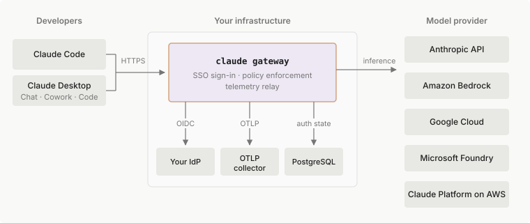

Amazon Bedrock、Claude Platform on AWS、Google Cloud 和 Microsoft Foundry 的 Claude 应用网关
通过自托管网关在 Amazon Bedrock、Claude Platform on AWS、Google Cloud 或 Microsoft Foundry 上运行 Claude Code，支持 SSO 登录、按组模型访问和 OTLP 遥测。
Claude 应用网关专为必须或倾向于通过自己的云提供商路由推理的组织设计，例如满足数据驻留要求。如果您没有此要求，并且想要访问其他功能，例如 SCIM 配置或 Claude Code 网页和移动版本，Claude Enterprise 可能更适合。请参阅功能可用性页面，了解所有部署方法的完整比较。
Claude Code 一次只使用一种登录方式：网关登录会取代 Claude for Teams 或 Enterprise 登录。网关会话不会获取您在 claude.ai 管理控制台中设置的服务器托管设置，因此请通过网关的 managed 块下发这些设置。请勿在该块中包含 forceLoginMethod 和 forceLoginOrgUUID，否则部分已登录的会话会在启动时退出。请参阅可用性和限制，了解网关会话会失去哪些功能。
Claude 应用网关是一个自托管服务，位于开发人员的 Claude Code 客户端和模型提供商之间。开发人员使用您的企业身份提供商 (IdP) 登录，而不是持有 API 密钥或云凭证。网关持有上游凭证，按 IdP 组强制执行模型访问和托管设置，并将使用情况遥测转发到您自己的可观测性堆栈。
它包含在 claude 二进制文件中，因此在笔记本电脑上运行 Claude Code 的同一可执行文件可以使用 claude gateway --config gateway.yaml 运行网关服务器。
本页涵盖：
- 为什么使用 Claude 应用网关，它相比自己运行的优势，以及何时其他解决方案更合适
- 一个快速入门，包含前置条件，可将网关从零配置到已登录的开发人员
- 连接开发人员，包括通过托管设置设置网关 URL
- 可用性和限制，涵盖哪些 Claude Code 功能可通过网关工作以及服务器支持什么
配套页面深入讲解。配置参考涵盖快速入门编写的 YAML 文件中的每个选项，部署指南涵盖每个 IdP 的设置、Kubernetes 和 Cloud Run 部署以及操作。
为什么使用 Claude apps gateway
网关概述涵盖网关的功能以及为什么要运行它。Claude apps gateway 是 Anthropic 自己的网关，内置于 claude 二进制文件中，并与每个 Claude Code 版本一起测试，因此它转发 Claude Code 发送的 anthropic-beta 值和请求字段，无需操作员维护单独的允许列表。部署后，它为您提供：
- 凭据：上游 API 密钥或云凭据仅存在于您的基础设施中。开发人员使用公司 SSO 进行身份验证并接收短期的持有者令牌，因此离职发生在您的 IdP 中。取消配置用户，其网关访问权限在会话生命周期内过期，默认为一小时。
- 访问控制：您的 IdP 组映射到模型允许列表和托管设置策略。网关在服务器端强制执行模型访问，拒绝非授予模型的请求，并选择每个组的托管设置策略，CLI 在托管设置层应用该策略。不同的团队获得不同的模型、工具和权限，开发人员无法覆盖其策略锁定的内容。
- 设置交付：网关本身将托管设置交付给已登录的客户端，取代来自 claude.ai 管理员控制台的服务器管理设置。
- 遥测：每个配置的目标接收OpenTelemetry Protocol (OTLP) 指标，默认包含 token 计数、模型、用户身份和延迟，日志和跟踪作为按目标的选择加入。
- 上游路由：客户端向网关发送 Anthropic Messages API，网关为每个上游进行转换，无论是 Amazon Bedrock、AWS 上的 Claude Platform、Google Cloud 的 Agent Platform、Microsoft Foundry 还是 Anthropic API，并在它们之间进行故障转移。您可以更改区域、提供商或故障转移顺序，而开发人员无需注意或重新配置。

网关自己的数据平面不会向 Anthropic 基础设施发送任何内容，除非 Anthropic API 是配置的上游。您控制遥测、审计日志、托管设置和开发人员的 IdP 身份的去向，网关不会将它们中的任何一个发送给 Anthropic。对于其余流量，CLI 进程可以发送什么以及如何关闭它，请参阅合规态势。
有关哪些 Claude Code 功能通过网关工作以及服务器本身支持什么，请参阅下面的可用性和限制。有关成本、绕过、运行多个网关和无服务器平台等决策，请参阅部署指南。
其他网关实现
如果您已经运行满足您需求的 LLM 网关或 API 网关，请继续使用它；其他 LLM 网关涵盖针对它配置 Claude Code。
网关兼容性指南记录了 Claude Code 期望从任何网关获得的内容：它调用的端点、要转发的标头和正文字段，以及删除它们时停止工作的内容。运行中的 Claude apps gateway 在 GET /protocol 处提供其自己的协议参考，该参考描述了它向 Claude Code 客户端公开的端点：SSO 登录、推理、托管设置交付、模型发现和遥测。使用 curl https://claude-gateway.internal.example.com/protocol 从任何已部署的网关（例如下面快速入门生成的网关）获取它。
协议的重大更改会提前宣布，但不保证无限期的向后兼容性。
网关登录令牌标识的是批准该登录的开发人员，而不是使用它的程序。Claude Code 登录时不使用自己的客户端 ID 或密钥，因此网关无法验证是哪个程序在登录。任何客户端都可以设置 User-Agent 和其他请求字段，因此请将它们用于路由或指标，而不是作为请求来自 Claude Code 的证明。
快速入门
本快速入门演示最小路径：在您的 IdP 中注册 OAuth 客户端，编写 gateway.yaml，使用 Docker Compose 运行网关和 Postgres，并端到端验证登录。它使用 Amazon Bedrock 上游；Claude Platform on AWS、Google Cloud 的 Agent Platform、Microsoft Foundry 和 Anthropic API 同样受支持，只需交换配置参考中所示的 upstreams 块。最后，您有一个开发人员可以 /login 的网关。
在您的私有网络上部署。 Claude Code 仅连接到地址为私有的网关。这是一个安全防护，因为受信任的网关可以推送在开发人员机器上运行命令的设置。将网关放在内部负载均衡器或 VPN 后面，并给它一个仅解析为私有 IP 的主机名。如果您的内部网络使用您的组织拥有的公共 IPv4 空间编号，请参阅允许网关在您拥有的公共地址空间上。
前提条件
在开始之前，请准备好以下内容：
| 您需要 | 详情 |
|---|---|
| Claude Code v2.1.195 或更高版本 | claude gateway 子命令和网关登录流在 v2.1.195 中发布。早期的公开版本不包含它们。运行网关服务器的机器和每个开发人员的机器都必须是 v2.1.195 或更高版本；运行 claude update 获取最新版本。Claude Platform on AWS 上游在网关服务器上需要 Claude Code v2.1.198 或更高版本。 |
| OpenID Connect (OIDC) 身份提供商 | Okta、Microsoft Entra ID、Google Workspace、Keycloak 或 Dex，或任何其他符合 OIDC 的 IdP，如 PingFederate。网关针对它运行标准 OIDC 发现和授权代码流。不支持 SAML 和 LDAP。 |
| PostgreSQL 11 或更高版本 | 支持设备登录流和速率限制计数器。托管 PostgreSQL 服务均可使用，包括最小层级；请参阅支持哪些数据库。使用支出限制时，它还保存应备份的持久支出、审计和身份表。建议通过 ?sslmode=require 使用 TLS。PostgreSQL 11、12 和 13 要求网关服务器上的 Claude Code 为 v2.1.290 或更高版本。PostgreSQL 项目已不再维护这些版本，因此请尽可能使用更新的版本。 |
| 模型上游 | Amazon Bedrock 凭据、Claude Platform on AWS 凭据、Google Cloud 凭据、Microsoft Foundry 资源或 Anthropic API 密钥。支持多个上游和故障转移。 |
| HTTPS | 网关必须可从开发人员笔记本电脑和用于登录的任何浏览器通过 https:// 访问；网关在同一侦听器上提供设备验证页面。通过 listen.tls 提供 TLS 证书，或在 TLS 终止入口后运行，两种情况下都要将 listen.public_url 设置为外部源。在 /login 处，Claude Code 仅在网关主机是环回时才接受纯 http:// 源：localhost、127.0.0.1 或 ::1。 |
| 私有网络地址 | 在 /login 处，Claude Code 要求网关的主机名或 IP 地址仅解析为私有地址：RFC 1918、链路本地、CGNAT 100.64.0.0/10、IPv6 ULA fc00::/7 或环回。对于您托管的网关，任何不在您所声明地址块内的公共地址都会被拒绝；请参阅部署指南中的威胁模型。如果开发人员机器通过公司代理路由 HTTPS，登录还要求代理主机解析为私有地址；如果不是，将网关主机添加到 NO_PROXY，以便 CLI 直接连接。如果您的内部网络使用您的组织拥有的公共 IPv4 空间编号，声明这些块，以便 /login 接受那里的网关。 |
| Linux 运行时 | 网关服务器仅在本机 Linux 二进制文件上运行。macOS 适用于本地开发。Windows 不支持作为服务器平台。 |
步骤
1. 在您的 IdP 中注册 OAuth 客户端
首先决定网关的主机名，因为重定向 URI 必须与其匹配。创建新的 OIDC Web 应用程序并将重定向 URI 设置为 https://claude-gateway.<your-domain>/oauth/callback，其中主机是您在步骤 3 中设置为 listen.public_url 的相同值。记下 client_id 和 client_secret。每个 IdP 的说明在身份提供商设置中。
2. 配置 PostgreSQL 数据库
使用 PostgreSQL 11 或更高版本。最小的托管层级就足够了。网关在启动时运行自己的 schema 迁移，因此数据库角色需要创建和修改表的权限；请参阅 store。
3. 编写 gateway.yaml
通过 ${ENV_VAR} 扩展读取机密，因此文件本身可以存在于版本控制中。使用在您的网络上解析为私有 IP 的 public_url 主机名，因为 /login 拒绝公共地址。最小配置有五个部分，其他所有字段都有默认值：
listen:
host: 0.0.0.0
port: 8080
# 除非主机是环回地址，否则必需。用于 IdP
# redirect_uri 和发现文档。
public_url: https://claude-gateway.internal.example.com
oidc:
issuer: https://login.example.com # 必须提供 /.well-known/openid-configuration
client_id: 0oa1example2
client_secret: ${OIDC_CLIENT_SECRET}
allowed_email_domains: [example.com] # 拒绝组织外的 id_tokens
userinfo_fallback: true # 对于 id_token 省略 email/groups 的 IdP；否则无害
session:
jwt_secret: ${GATEWAY_JWT_SECRET} # openssl rand -base64 32
ttl_hours: 1 # 也限制 IdP 取消配置时的撤销延迟
store:
postgres_url: ${GATEWAY_POSTGRES_URL} # 为托管 Postgres 添加 ?sslmode=require
upstreams:
- provider: bedrock
region: us-east-1
auth: {} # 空：AWS 默认凭据链
# (IRSA, EC2/ECS task role, env vars, ~/.aws)
# 模型会自动按上游转换。内置目录
# 将 claude-opus-4-8 映射到 us.anthropic.claude-opus-4-8 等，
# 对于每个 Bedrock 支持的 Claude 模型。设置为 false 并添加 `models:` 列表以
# 仅公开特定模型。
auto_include_builtin_models: true
此配置足以使用默认 Amazon Bedrock 模型目录进行工作登录循环。运行后，通过 managed.policies 添加按组 RBAC 和托管设置，通过 telemetry 添加遥测扇出，以及通过 models 添加多上游故障转移、预配置吞吐量 ARN 或非美国地区。
Amazon Bedrock 上游需要一个 AWS 主体，具有对 inference-profile/us.anthropic.* ARN 和底层 foundation-model/anthropic.* ARN 的 bedrock:InvokeModel 和 bedrock:InvokeModelWithResponseStream 权限。它还需要在 Bedrock 控制台的模型目录中为该账户提交 Anthropic 的一次性用例表单。
使用 EKS 上的 IRSA、ECS 任务角色或 EC2 实例配置文件提供凭据，而不是静态密钥。upstreams 参考具有完整的 IAM 详情、跨云凭据矩阵以及其他提供商的 auth 块。
4. 运行它
围绕满足镜像要求的 claude 二进制文件构建容器镜像，然后将其与 Postgres 一起运行。Compose 文件将镜像引用为 registry.example.com/claude-gateway:2.1.198；替换为您自己的注册表和镜像标签：
services:
gateway:
image: registry.example.com/claude-gateway:2.1.198
ports: ["8080:8080"]
volumes: ["./gateway.yaml:/etc/claude/gateway.yaml:ro"]
environment:
OIDC_CLIENT_SECRET: ${OIDC_CLIENT_SECRET}
GATEWAY_JWT_SECRET: ${GATEWAY_JWT_SECRET}
GATEWAY_POSTGRES_URL: postgres://gw:pw@postgres/gateway
# AWS 凭据：在生产中，省略这些并使用实例
# 角色。对于本地 Compose 测试，传递您自己的：
AWS_ACCESS_KEY_ID: ${AWS_ACCESS_KEY_ID}
AWS_SECRET_ACCESS_KEY: ${AWS_SECRET_ACCESS_KEY}
AWS_SESSION_TOKEN: ${AWS_SESSION_TOKEN}
depends_on:
postgres:
condition: service_healthy
postgres:
image: postgres:16-alpine
environment: { POSTGRES_USER: gw, POSTGRES_PASSWORD: pw, POSTGRES_DB: gateway }
healthcheck:
test: ["CMD-SHELL", "pg_isready -U gw"]
interval: 5s
volumes: ["pgdata:/var/lib/postgresql/data"]
volumes: { pgdata: }
网关是一个单一的 Linux 二进制文件，读取配置，连接到 Postgres 并应用其 schema 迁移，针对您的 IdP 运行 OIDC 发现，构建上游客户端，并开始侦听。
启动对配置、Postgres 连接、OIDC 发现和上游客户端构造是失败关闭的。如果其中任何一个无法访问或配置错误，网关会以错误退出，而不是以降级状态提供流量。
成功启动不会验证推理路径，因为 Amazon Bedrock 和 Google Cloud 的 Agent Platform 实例凭据在第一个请求时解析，而不是在启动时。
监视 stderr 以获取启动序列。日志行使用格式 [gateway] <timestamp> <level> <message>，审计事件是带有 evt 字段的单行 JSON，启动横幅（下面省略）在迁移和侦听行之间打印。新数据库每个 schema 迁移打印一行 migration N applied；已迁移的数据库不打印任何内容。您应该按顺序看到：
{"ts":"2026-06-10T17:03:21.114Z","evt":"config.load","path":"/etc/claude/gateway.yaml","sha256":"…"}
[gateway] 2026-06-10T17:03:21.395Z info waiting for migration lock (another replica may be migrating; check pg_locks for key 6775156 if this persists)
[gateway] 2026-06-10T17:03:21.408Z info migration 1 applied
…
[gateway] 2026-06-10T17:03:21.431Z info migration 6 applied
[gateway] 2026-06-10T17:03:21.512Z info claude gateway listening on http://0.0.0.0:8080
网关还会记录一个警告，access_control.allow_cidrs 为空。这在这里是预期的，因为在您设置允许列表之前，没有任何东西限制网关提供的客户端地址。access_control 参考有推荐的范围。
如果启动在 claude gateway listening on 行之前退出，stderr 的最后一行命名问题：
- 无法访问的 Postgres
- 没有 DDL 权限的 Postgres 角色
- 无法访问或无效的 OIDC 发现文档
- 配置 schema 违规，带有违规字段路径
修复它并重新启动。
如果您已经有 TLS 终止入口，请跳过 Compose 并直接使用 claude gateway --config gateway.yaml 运行二进制文件。将 public_url 设置为入口源，并将 listen 绑定到环回或集群内部地址。
5. 验证身份验证表面
三个检查确认网关可以在将其交给开发人员之前对真实用户进行身份验证。
示例使用网关的公共 URL；对于没有入口的本地 Compose 设置，在前两个检查中替换 http://localhost:8080。第三个检查打开 verification_uri_complete，它从 public_url 构建，因此对于本地 Compose，在 gateway.yaml 中设置 public_url: http://localhost:8080，并在步骤 1 的 OAuth 客户端上添加 http://localhost:8080/oauth/callback 作为第二个重定向 URI，因为网关从 public_url 构建 IdP redirect_uri。验证链接然后在您的本地浏览器中打开。
在 Windows PowerShell 中，运行 curl.exe；裸 curl 是 Invoke-WebRequest 的别名，拒绝这些标志。
首先，获取发现文档，确认网关已启动，配置有效，所有启动检查都通过：
curl -s https://claude-gateway.internal.example.com/.well-known/oauth-authorization-server | jq
{
"issuer": "https://claude-gateway.internal.example.com",
"device_authorization_endpoint": "…/oauth/device_authorization",
"token_endpoint": "…/oauth/token",
"grant_types_supported": ["urn:ietf:params:oauth:grant-type:device_code", "refresh_token"]
}
响应包括其他字段，如 response_types_supported 和 scopes_supported。
其次，请求设备授权，确认设备登录流工作且 Postgres 可访问且可写：
curl -s -X POST https://claude-gateway.internal.example.com/oauth/device_authorization | jq
{
"device_code": "…",
"user_code": "WDJB-MJHT",
"verification_uri": "https://claude-gateway.internal.example.com/device",
"verification_uri_complete": "https://claude-gateway.internal.example.com/device?user_code=WDJB-MJHT",
"expires_in": 600,
"interval": 5
}
第三，通过在浏览器中打开 verification_uri_complete 并确认代码来测试浏览器部分。您应该被重定向到您的 IdP 的登录页面，登录后，返回网关并显示已登录确认。
使用第一个失败的检查来定位问题：
- 第一个检查失败：启动未完成；检查 stderr
- 第二个检查失败：Postgres 无法从网关访问或角色无法写入；检查连接字符串和授予
- 第三个检查未到达 IdP：检查 IdP 的重定向 URI 是否与
https://<gateway>/oauth/callback完全匹配 - 第三个检查到达 IdP 但以错误反弹：读取网关的审计日志，它记录每个身份验证拒绝及其原因，例如
email domain not allowed
6. 登录开发人员
最后一步发生在开发人员机器上，而不是服务器上。在该机器的托管设置文件中将 forceLoginMethod 设置为 "gateway"，将 forceLoginGatewayUrl 设置为您的网关的 public_url，并将 parentSettingsBehavior 设置为 "merge"，然后运行 /login，在Cloud gateway 屏幕上按 Enter，并完成浏览器登录。下面的设置网关 URL介绍这三个键以及如何将它们分发到每台开发人员机器。
连接开发人员
开发人员在自己的笔记本电脑上使用企业工作账户，通过一次浏览器登录即可连接。他们不需要 claude.ai 账户、API 密钥或订阅，因为发往模型的请求会通过网关，使用组织的上游凭据。连接由您通过 MDM 推送的客户端托管设置驱动，本节介绍管理员需要配置的内容。
CLI 在首次连接时会对网关的 TLS 叶证书生成指纹，并按主机名固定该指纹。在登录、静默会话刷新以及获取托管设置时，它会再次检查该固定指纹，而推理请求使用标准 TLS 验证，不检查固定指纹。通过 HTTPS 代理路由的请求会跳过固定指纹检查，因此请将网关主机添加到 NO_PROXY，使这些请求直接连接。
请将预期的 SHA-256 指纹与网关 URL 一起发布，以便开发人员有可比对的依据。/login 提示会以不带冒号的小写十六进制形式显示指纹的前 16 个字符。要从证书文件中以该形式输出完整指纹，请运行：
openssl x509 -noout -fingerprint -sha256 -in cert.pem | cut -d= -f2 | tr -d : | tr 'A-F' 'a-f'
证书轮换时，每位开发人员都会再次看到信任提示，因此请将轮换视为计划内事件并重新发布指纹。如果您的网关策略包含需要批准的设置，开发人员在接受新证书后还会再次看到该批准对话框，因为 Claude Code 将批准记忆与固定的证书绑定。
网关可以在其令牌响应中返回可选的 email 字段，以指明某次登录所使用的账户。返回该字段时，开发人员需要在 Claude Code 保存凭据之前确认该账户。确认登录后，/status 会显示该账户。
该确认要求开发人员机器上的 Claude Code 为 v2.1.275 或更高版本；低于该版本的客户端会忽略此字段。claude 二进制文件中的网关服务器不返回该字段，因此通过它的登录会在没有确认的情况下完成。
开发人员登录后，模型选择器会显示其 availableModels 允许列表中的模型。托管设置在启动时生效并每小时刷新一次，遥测会路由到您的收集器。
会话会在 ttl_hours 到期前静默刷新。当 IdP 取消配置后刷新失败时，Claude Code 会提示开发人员重新登录。
设置网关 URL
以下三个键需放入您通过 MDM 或直接在磁盘上部署的各操作系统对应的托管设置文件中。对于没有托管设置的机器，请改为参阅在用户设置中设置网关 URL。forceLoginMethod 和 forceLoginGatewayUrl 会让 /login 直接在 Cloud gateway 界面打开并填入 URL，而 parentSettingsBehavior: "merge" 允许 Claude Desktop 将网关的出站允许列表传递给它启动的 Claude Code 会话，详见向 Claude Desktop 会话传递策略：
{
"forceLoginMethod": "gateway",
"forceLoginGatewayUrl": "https://claude-gateway.internal.example.com",
"parentSettingsBehavior": "merge"
}
开发人员按 Enter 即可连接。首次连接的 TLS 指纹提示仍会出现。文件部署到机器上后，尚未完成网关登录的开发人员会看到管理员策略要求进行 Cloud gateway 登录中描述的某条消息。通过 CLAUDE_CODE_USE_BEDROCK 等环境变量选择云提供商的开发人员不需要进行网关登录。
登录选择器中没有网关选项，而在托管设置中只设置 forceLoginMethod 而不设置 URL，会让开发人员停留在“Contact your IT administrator”消息处。登录相关的键应放在您推送到机器的文件中，而不是网关的 managed.policies[].cli 块中，后者只会到达已连接的客户端。
在用户设置中设置网关 URL
在没有托管设置的机器上，请让每位开发人员将 forceLoginMethod 和 forceLoginGatewayUrl 添加到自己的用户设置文件 ~/.claude/settings.json 中。这要求开发人员机器上的 Claude Code 为 v2.1.295 或更高版本。以下示例指定了位于 claude-gateway.internal.example.com 的网关：
{
"forceLoginMethod": "gateway",
"forceLoginGatewayUrl": "https://claude-gateway.internal.example.com"
}
当开发人员在 Claude Code 输入框中运行 /login 时，Cloud gateway 界面会以该地址打开，开发人员按 Enter 即可连接。首次连接的 TLS 指纹提示仍会出现。以这种方式设置的键受以下限制：
- 仅限用户设置：Claude Code 从
~/.claude/settings.json读取这两个键，而不会从项目的.claude/settings.json或.claude/settings.local.json读取。 - 托管设置会使其失效：一旦管理员的设置通过托管设置文件、macOS plist 或 Windows HKLM 策略，或策略帮助程序到达该机器，Claude Code 就会忽略用户设置中指定的网关。
允许位于您自有公网地址空间的网关
有些组织使用自己拥有的公网 IPv4 地址块为内部网络编址，例如运营商自己的地址空间或遗留的 /8，因此其网关没有私有地址。请在 gatewayInternalNetworks 托管设置中列出这些地址块。之后，当开发人员的机器从某个已列出地址块内的地址连接到位于同一地址块内的网关时，/login 会接受该网关。这要求开发人员机器上的 Claude Code 为 v2.1.268 或更高版本；更早的版本会忽略该键并应用私有地址规则。
gatewayInternalNetworks 适用于恰好使用公网地址空间编址的内部网络。它并不能让网关暴露在互联网上变得安全：受信任的网关可以推送在开发人员机器上运行命令的设置。
请通过防火墙或负载均衡器规则，确保从您的网络外部无法访问网关。将网关的 access_control.allow_cidrs 设置为您在此处声明的相同地址块，使网关本身拒绝来自其他任何地方的客户端。如果网关位于负载均衡器或入口之后，还需将 listen.trusted_proxies 设置为该前端，否则网关会用前端自身的地址而不是开发人员的地址来匹配 allow_cidrs。
请将该键添加到与登录键相同的托管设置来源中：托管设置文件、MDM 配置描述文件或注册表策略。Claude Code 会忽略用户设置、项目设置和服务器托管设置中的该键。
以下示例声明了一个地址块。请将 203.0.113.0/24 替换为您自己的地址块。它是文档专用范围，Claude Code 会拒绝此类范围。
{
"gatewayInternalNetworks": ["203.0.113.0/24"]
}
Claude Code 会在 /login 联系任何网关之前验证该列表：
- 每个条目都是一个 IPv4 地址块，以其起始地址和
/8到/32之间的前缀表示。 - 列表最多包含四个地址块，且任意两个不得重叠。
- 任何地址块都不得与私有地址空间重叠：
10.0.0.0/8、172.16.0.0/12、192.168.0.0/16、127.0.0.0/8、169.254.0.0/16和100.64.0.0/10。/login无需此键即可接受位于这些范围内的网关。 - 任何地址块都不得与绝不可能是组织网络的空间重叠：VPN 和 NAT64 客户端用作本地地址的
198.18.0.0/15和192.0.0.0/24；文档专用范围192.0.2.0/24、198.51.100.0/24和203.0.113.0/24；以及保留范围0.0.0.0/8、192.88.99.0/24和组播224.0.0.0/4。您可以声明240.0.0.0/4内的地址块，一些大型网络将其用作内部单播空间。
来自 managed-settings.json 及其 managed-settings.d/ 附加文件的地址块会合并为一个列表，上述限制适用于合并后的列表。要缩小某个地址块，请替换其条目，而不是在附加文件中再添加一个重叠的条目；/login 会拒绝重叠。
如果某个条目违反规则，或者值不是字符串列表，Claude Code 会拒绝该机器上的所有新网关登录，并在消息中指出问题。对位于私有地址的网关的登录也会失败，而现有登录会继续有效。请先在一台机器上试用该值，再进行部署。Claude Code 还会将类型错误的值列入其报告的无效托管设置中。
在列表有效的情况下，/login 会对地址位于已列出地址块内的网关执行三项检查：
- 网关主机名解析到的每个地址都位于同一个地址块内。如果某个名称还有位于该地址块之外的记录（包括私有地址和 IPv6 地址），Claude Code 会拒绝它。
- 开发人员的机器从同一地址块内进行连接。如果机器位于 NAT 之后、位于容器或 WSL2 内，或者使用地址池位于该地址块之外的 VPN，Claude Code 会拒绝，并指出该机器用于连接的地址。
- 连接是直接的。如果
HTTPS_PROXY适用于网关主机，/login会拒绝，并指出需要添加的NO_PROXY条目。
三项检查全部通过后，信任提示会增加一行，指明机器的地址、网关的地址以及同时包含两者的已声明地址块。
该键对其他网关没有任何影响：对位于私有地址的网关的登录照常有效，对位于所有已列出地址块之外的公网地址的网关的登录照常被拒绝。
已声明的地址块会缩小可登录的范围，但无法证明机器所在的位置，因此请只声明您的组织所控制的地址空间。与其他租户共享的地址块（例如云提供商的公网范围）会让其中的任何人都能通过同样的检查。
向 Claude Desktop 会话传递策略
Claude Desktop 的 Cowork 和 Code 标签页（以及启用后的 Chat）运行在嵌入式 Claude Code 会话之上，并通过网关发送其模型请求。它会向每个这样的会话传递策略，这些策略基于网关在 /user/bootstrap 处提供给它的配置构建：即从匹配策略的 cli 或 code 块派生出的模型允许列表、禁用的工具和出站允许列表，外加 desktop 覆盖层。
该块中的其他键，例如 hook、env 以及 Bash(npm *) 这类限定范围的权限规则，会到达通过 /login 登录的客户端。在 code 下，当满足 Code 标签页的条件时，它们也会到达 Code 标签页的会话。它们不会到达 Cowork 或 Chat 会话。Claude Desktop 从其自身的托管配置中读取网关 URL，并使用自己的流程登录，与设置网关 URL 中的 forceLoginMethod 和 forceLoginGatewayUrl 键无关。
由启动进程传递的设置称为父设置。在任何具有管理员部署的托管来源的机器上，Claude Code 都会忽略父设置，除非传递策略的来源设置了 parentSettingsBehavior: "merge"。
哪些机器需要启用该选项
仅运行 Claude Desktop 的机器需要启用。Claude Desktop 会自行将模型列表和已禁用工具列表应用于嵌入式会话，但出站允许列表只能以父设置的形式到达这些会话，形式为 WebFetch 域规则和沙箱网络规则。如果不启用该选项，这些会话将在没有出站限制的情况下运行，而且不会有任何警告。网关仍会拒绝针对策略未授予的模型的推理请求。
插件市场允许列表也只能以父设置的形式到达嵌入式会话。当您在 Claude Desktop 的托管配置中关闭用户添加的插件市场时，Claude Desktop 2.16120.0 或更高版本会隐藏您的组织未配置的市场，并拒绝从这些市场安装。为阻止嵌入式会话加载已从这些市场安装的插件，它会以父设置的形式向这些会话发送 strictKnownMarketplaces 列表。如果不启用该选项，Claude Code 会忽略该列表，这些插件会继续加载。
开发人员通过 /login 登录的机器不需要启用；每个 Claude Code 会话都会从网关获取其策略。
由 policyHelper 提供托管设置的机器群无法使用该选项：在这些机器群上，Claude Code 从不合并父设置，因为它仅从帮助程序的输出中读取托管设置。
启用该选项
部署设置网关 URL 中的托管设置片段，将其同步到任何优先级高于该文件的客户端来源，然后进行验证。
1. 在托管设置文件中部署该选项
上方的片段已包含 parentSettingsBehavior: "merge"，因此您推送到机器的文件会带有该选项。
2. 将片段同步到任何优先级高于该文件的来源
Claude Code 只从选定的来源读取 parentSettingsBehavior。向某个来源添加任何策略键都可能使该来源成为选定来源，因此在客户端来源中，请同步整个片段，而不仅仅是 parentSettingsBehavior。客户端托管设置介绍了通过组策略或配置描述文件传递策略的机器群。macOS 上的托管偏好设置 plist 或 Windows 上的 HKLM 策略优先级高于 managed-settings.json 文件，而网关自身的远程托管设置优先级高于这两者，因此在登录网关的机器上，还需在网关策略的 cli 或 code 块中设置 parentSettingsBehavior。
3. 检查选定的来源
在仅运行 Claude Desktop 的机器上，调用 Agent SDK 的 resolveSettings()，并读取其 sources 列表中 managed 条目上的 policyOrigin。该值指明选定的客户端来源：plist、hklm 或 file，即必须包含该片段的来源。
Cowork 和 Chat 会话不会获取网关策略，因此对它们而言，网关的块不是选定来源。
当策略的设置位于 code 下且满足 Code 标签页的条件时，Code 标签页会话会获取网关策略。此时网关的 code 设置就是该会话的选定来源。
限制父设置
部署 parentSettingsBehavior: "merge" 后，任何启动 Claude Code 的宿主进程都可以提供父设置，不仅是 Claude Desktop，还包括 Agent SDK 应用程序或 IDE 扩展。
Claude Code 会根据一个限制性键的允许列表过滤父设置，但某些被允许的键可能授予访问权限而非限制访问。除非您设置了 allowManaged*Only 锁定，否则宿主提供的权限允许规则和沙箱允许列表仍然有效。无论哪种情况，您策略中的拒绝和询问规则都会保持有效；它们会在任何允许规则之前进行评估。
Claude Code 会以精简形式转发父进程提供的 sandbox.credentials 条目：
deny条目：仅转发其path或name以及模式。- 使用
mode: mask的文件条目：仅以哨兵形式转发，作为injectHosts为空列表的整文件掩码，因此在任何平台上，代理都不会为父进程提供的条目替换真实值。所有结构化掩码字段也会被丢弃，因此父进程提供的提取模式无法取代其他来源为同一路径设置的更严格掩码。 - 使用
mode: mask的envVars条目：不转发。deny是父通道通过envVars条目可以表达的唯一限制。 awsPairs和sigv4：仅以限制形式转发。对于sigv4，只保留deny值，只要父进程定义了sigv4块，就会将全部三种请求形式streaming、presigned和sigv4a固定为deny。awsPairs中的配对绝不会以可重新签名的形式转发；指明某个常规 AWS 变量的配对会被替换为一个无效条目，该条目会继续抑制AWS_ACCESS_KEY_ID、AWS_SECRET_ACCESS_KEY和AWS_SESSION_TOKEN的自动配对。
部署锁定
为了让父设置在过滤器支持的范围内尽可能接近纯限制性，请将全部五个 allowManaged*Only 锁定及其管控的允许列表添加到与合并选项相同的来源中：
{
"forceLoginMethod": "gateway",
"forceLoginGatewayUrl": "https://claude-gateway.internal.example.com",
"parentSettingsBehavior": "merge",
"allowManagedPermissionRulesOnly": true,
"allowManagedMcpServersOnly": true,
"allowManagedHooksOnly": true,
"allowedMcpServers": [{ "serverUrl": "https://mcp.internal.example.com/*" }],
"sandbox": {
"network": {
"allowManagedDomainsOnly": true,
"allowedDomains": ["github.com", "*.npmjs.org"]
},
"filesystem": {
"allowManagedReadPathsOnly": true,
"denyRead": ["~/"],
"allowRead": ["~/projects"]
}
}
}
操作系统策略（例如 HKLM 注册表策略或托管偏好设置 plist）的优先级高于该文件，因此请通过它而不是该文件传递整个片段。网关的远程托管设置优先级高于操作系统策略和文件来源，但只能到达已连接的客户端。请将锁定、允许列表和合并选项同步到策略的 cli 或 code 块中，并保留此文件的部署，因为从未连接的机器只能从该文件获取策略。
跨来源的锁定行为
设置某个锁定不会限制其他锁定；每个键都记录在设置参考中。
来自优先级低于胜出来源的管理员来源时，两个沙箱锁定仍然有效，allowManagedPermissionRulesOnly 仍会阻止父进程提供的允许规则和 additionalDirectories。在 Claude Code v2.1.273 或更高版本中，MCP 服务器锁定在来自优先级低于胜出来源的来源时也有效，并且在其开启期间，托管的 allowedMcpServers 列表来自设置了该列表的最高优先级管理员来源。
默认情况下，hook 锁定以及 allowManagedPermissionRulesOnly 对开发人员自身规则的作用需要由胜出来源设置；在 Claude Code 如何组合托管来源中所述的 managedSourcesBehavior 合并选项下，Claude Code 会对每个锁定应用任何来源所设置的最严格值。在 policyHelper 机器群上，Claude Code 仅从帮助程序的输出中读取锁定。
每个锁定都会让 Claude Code 忽略开发人员自己针对该设置的条目，因此请在锁定旁边包含您组织的允许列表：
- 网络域：使用空的托管域列表进行锁定会阻止所有沙箱化的出站流量。
- MCP 服务器：如果任何管理员来源或父进程提供的设置中都没有
allowedMcpServers，进行锁定会加载所有未被deniedMcpServers阻止的服务器。 - 读取路径：
allowRead条目只会重新允许denyRead区域内的路径，因此请将它们与托管的denyRead搭配使用。
锁定未覆盖的设置
即使设置了全部五个锁定，以下父进程提供的设置仍会通过过滤器：
forceLoginOrgUUID：当 Claude Code 应用的托管设置未设置组织 UUID 时，Claude Code 会采用父进程提供的值。网关登录不检查此键。Claude Code 应用的托管设置中的组织 UUID 会阻止父进程的值，并成为 Claude Code 强制执行的组织 UUID。如果您的机器群固定了某个 Anthropic 组织，请参阅哪个托管来源提供登录键，了解应在何处设置forceLoginOrgUUID。allowedMcpServers：当没有生效的管理员列表时，Claude Code 会采用父进程提供的允许列表。allowManagedMcpServersOnly不会阻止它，因为该锁定会将胜出的列表作为托管值强制执行，在没有管理员来源提供列表时，这也包括父进程提供的列表。最高优先级管理员来源中的列表会阻止父进程的列表，并成为 Claude Code 强制执行的列表，因此请在那里、在锁定旁边设置allowedMcpServers。在 v2.1.223 之前，任何管理员来源中这两个键之一的值都会阻止父进程的值。availableModels：当胜出的托管来源未设置模型列表时，Claude Code 会采用父进程提供的模型列表。如果您的机器群限制模型，请在胜出来源中设置availableModels。allowedProviders：当胜出的托管来源未设置 API 提供商允许列表时，Claude Code 会采用父进程提供的该列表。如果您的机器群限制开发人员可以使用的 API 提供商，请在胜出来源中设置allowedProviders。需要 Claude Code v2.1.285 或更高版本。strictKnownMarketplaces：当胜出的托管来源未设置插件市场允许列表时，Claude Code 会采用父进程提供的该列表。当 Claude Desktop 2.16120.0 或更高版本的托管配置关闭用户添加的插件市场时，它会发送该列表。如果您的机器群限制市场，请在胜出来源中设置strictKnownMarketplaces。需要 Claude Code v2.1.282 或更高版本。blockedMarketplaces：父进程提供的市场拒绝列表会通过，并添加到托管来源设置的任何拒绝列表中，因为拒绝列表只会进一步增加限制。需要 Claude Code v2.1.282 或更高版本。strictPluginOnlyCustomization：无论设置了何种锁定，此键都会通过过滤器，并且它会让 Claude Code 忽略开发人员自己的自定义内容，包括保护性 hook。没有任何锁定能阻止它。
如果您将 managedSourcesBehavior 设置为 "merge"，请查看每种键应用哪个来源的值。
父设置中的 hook 和 skill 键如何生效
您的应用程序在 Agent SDK 的 managedSettings 选项中传递的键属于父设置。在管理员部署了托管设置的机器上，Claude Code 会忽略父设置，除非管理员允许嵌入宿主添加策略。
如果您在 managedSettings 中传递 disableAllHooks: true：
- 停止：用户、项目和本地 hook，以及在 Agent frontmatter 或 SDK 的
settings选项中声明的 hook。 - 继续运行：您的应用程序的 SDK hook 回调以及来自托管设置的管理员 hook。您的应用程序无法关闭管理员的 hook。
| 您传递的内容 | 结果 |
|---|---|
hooks，或包含条目的 allowedHttpHookUrls 或 httpHookAllowedEnvVars |
Claude Code 会忽略该键。请改用 SDK 的 settings 选项。 |
allowedHttpHookUrls: [] |
生效，除非管理员定义了 hooks 或启用了插件。不会运行任何 HTTP hook，但其他设置来源列出的 URL 除外。 |
httpHookAllowedEnvVars: [] |
生效，除非管理员定义了 hooks 或启用了插件。HTTP hook 标头只能包含其他设置来源列出的环境变量。 |
disableSkillShellExecution: true |
生效。 |
在 managedSettings 中传递这些键需要 Claude Code v2.1.309 或更高版本，或 TypeScript Agent SDK v0.3.309 或更高版本。
连接 Claude Desktop
Claude Desktop 通过另一个 MDM 键连接到同一网关：在 Claude Desktop 的托管配置中将 bootstrapUrl 设置为 <listen.public_url>/user/bootstrap，并通过 desktop 键让用户的策略启用该功能。Claude Desktop 覆盖层介绍了这两部分。需要网关服务器上的 Claude Code 为 v2.1.203 或更高版本。
Claude Desktop 通过网关的身份提供商、使用相同的浏览器 SSO 步骤让开发人员登录，然后从网关而不是从 Anthropic 获取其配置。模型访问和策略遵循与 CLI 相同的按组规则。同时使用 CLI 和 Claude Desktop 的开发人员需要分别登录两者；网关会话不会在它们之间共享。
连接后，Claude Desktop 会通过网关发送来自每个已启用标签页的模型请求。它默认显示 Cowork 和 Code 标签页。要同时提供 Chat，请在运行 Claude Code v2.1.227 或更高版本的网关上，在策略的 desktop 块中将 chatTabEnabled 设置为 true。开启 Cowork 时，Claude Desktop 随后会在一个标签页中同时显示 Chat 和 Cowork。
CI 流水线和远程机器
没有面向无人值守流水线的服务令牌流程。网关登录始终运行浏览器设备流程，因此没有开发人员批准登录的 CI 作业无法完成身份验证；请将这些作业直接配置为使用您的提供商。请将 forceLoginMethod 和 forceLoginGatewayUrl 部署到开发人员机器上，不要部署到 CI 运行器上。在托管设置中设置了这两个键的机器上，使用 ANTHROPIC_API_KEY、ANTHROPIC_AUTH_TOKEN 或 apiKeyHelper 进行身份验证的会话会在启动时退出。
开发人员登录后，该机器上的每个 Claude Code 会话都会使用网关会话，包括非交互式 claude -p 运行以及由 Agent SDK 启动的会话。Claude Code 会对其中每一个应用网关策略。
设备流程将轮询的 CLI 与进行批准的浏览器分离开来，因此没有显示器的远程开发机也能正常使用：开发人员通过 SSH 在远程机器上运行 /login，然后在笔记本电脑的浏览器中打开验证链接。
对开发人员强制执行的内容
以下保证适用于通过 /login 登录的每个会话。Claude Desktop 启动的嵌入式会话按照向 Claude Desktop 会话传递策略中所述的方式获取策略，遥测一项说明了它们的导出数据发往何处。
- 模型访问：针对策略未授予的模型的请求会返回 400，
/model选择器会被筛选为策略的availableModels允许列表。这也包括开发人员选择模型之前会话所使用的起始模型；请参阅让会话以策略允许的模型启动。 - 遥测目标：在通过
/login登录的会话中，CLI 会将其 OTLP/HTTP 导出数据发送到网关，而不是发送到本地设置的OTEL_EXPORTER_OTLP_ENDPOINT，除非策略将您的收集器指定为端点。网关会将收到的导出数据中继到telemetry.forward_to中的目标。 - 在 Claude Desktop 启动的嵌入式会话中，CLI 会将其导出数据发送到已配置的
OTEL_EXPORTER_OTLP_ENDPOINT。只有当该端点指向网关本身时，CLI 才会在这些导出数据中附加网关会话令牌。 - 如果某个信号没有配置目标，网关会接收并丢弃它。
- 如果您已经在直接收集 Claude Code 遥测数据，请将您的收集器添加为
forward_to目标，或者在策略中指定它以跳过中继。 - 凭据：网关令牌是会话唯一的凭据。登录期间，Anthropic 配置文件以及任何之前的 claude.ai 登录都会被忽略，因此开发人员无需先注销 claude.ai。对于已配置的
ANTHROPIC_API_KEY、ANTHROPIC_AUTH_TOKEN或apiKeyHelper凭据，或者之前 Claude Console 登录所保存的 API 密钥，请参阅管理员策略要求进行 Cloud gateway 登录。 - 托管设置：已锁定的键无法在本地覆盖。CLI 在启动时应用策略，并在每小时一次的轮询中应用更改，但仅在下次启动时生效的更改除外。
- 网关不可达时启动：已登录的会话会在大约 10 秒后以错误退出，而不是在没有设置的情况下启动。
- 网关终止会话后启动：有关以网关注销状态打开的启动，以及在网关返回
401时退出的启动，请参阅强制执行失败即关闭的启动。 - 取消配置：当用户在 IdP 中被禁用时，其会话会在下一次刷新失败时于
ttl_hours内过期。 - 注销：
/logout会从开发人员的机器上删除网关凭据。 - 当网关的发现文档在与网关 URL 相同的协议、主机和端口上公布了
revocation_endpoint时，/logout还会将存储的令牌发送到该端点，以便网关在其一侧终止会话。该请求为尽力而为，因此无论端点是否响应，开发人员机器上的注销都会完成。该撤销功能要求开发人员机器上的 Claude Code 为 v2.1.275 或更高版本。 claude二进制文件中的网关服务器不公布任何撤销端点，因此从它注销只会终止开发人员机器上的会话。要在服务器端强制终止会话，请参阅 JWT 密钥轮换。
组织可以看到的内容
使用遥测会将开发人员的身份、token 数量、模型和延迟传送到组织的收集器。网关不会记录或存储提示词或补全内容。是否收集更丰富的遥测数据（例如日志和追踪，其中可能包含命令和文件路径）由组织按目标自行选择。
可用性和限制
该表涵盖当开发人员通过网关连接时哪些 Claude Code 功能有效，以及网关服务器本身支持什么。如果不支持某些内容，Notes 列给出替代方案。
网关交付 CLI 发送给每个上游的 anthropic-beta 值，因此操作员不维护 beta 允许列表。对于忽略标头的 Amazon Bedrock，网关将值移到请求正文的 anthropic_beta 字段中；其他上游按发送的方式接收标头。
| 功能 | 状态 | 注释 |
|---|---|---|
| 推理转发 (Amazon Bedrock、Claude Platform on AWS、Google Cloud 的 Agent Platform、Microsoft Foundry、Anthropic) | 可用 | 具有按上游模型转换和故障转移。Amazon Bedrock 上游使用 bedrock-runtime 端点和 AWS 默认凭据链。Amazon Bedrock Mantle 上游需要网关服务器上的 Claude Code v2.1.283 或更高版本，Claude Platform on AWS 上游需要 v2.1.198 或更高版本。 |
| 1M token 上下文窗口 | 可用 | Fable 模型、Sonnet 5 及更高版本以及 Opus 4.7 及更高版本默认使用 1M 窗口运行；请参阅扩展上下文。Fable 和 Opus 模型的 1M 默认值需要开发人员机器上的 Claude Code v2.1.287 或更高版本 |
| 按 IdP 组的模型访问和托管设置 | 可用 | 模型访问在服务器端强制执行；托管设置按 IdP 组交付，由 CLI 在托管设置层应用 |
| Claude Desktop | 可用（需要选择加入） | 一旦策略使用 desktop 键选择加入，网关就会在 /user/bootstrap 处提供 Claude Desktop 的配置，并且 Claude Desktop 会通过网关发送其模型请求。要启用 Chat，请参阅连接 Claude Desktop。需要网关服务器上的 Claude Code v2.1.203 或更高版本。 |
| 遥测扇出 (OTLP/HTTP) | 可用 | 按导出标识戳；protobuf 和 JSON 编码 |
| OIDC 身份提供商 | 可用 | 任何符合 OIDC 的 IdP；网关运行标准 OIDC 发现和授权代码流。请参阅身份提供商设置了解每个 IdP 的配置 |
| 按用户和按组支出限制 | 可用 | 请参阅支出限制 |
| 服务器端网络搜索 | 不可用 | CLI 无法看到网关路由到哪个上游提供商，因此无法验证网络搜索支持并在网关会话上禁用 WebSearch |
| Remote Control | 不可用 | CLI 显示命名网关的错误 |
/design-sync 和 /design-login |
不可用 | 两者都需要 claude.ai，CLI 在网关会话上不联系，因此两个命令都不会出现 |
需要功能标志获取的功能，例如 /import 和 claude import |
不可用 | CLI 在网关会话上跳过标志获取。需要功能标志获取的功能列出了关闭的内容 |
| 标准提示缓存 | 可用 | 网关将 cache_control 断点转发到每个上游。缓存位置涵盖 CLI 标记的块，包括它在对话中途追加的系统上下文 |
| 1 小时缓存 TTL | 可用（需要选择加入） | CLI 在网关会话上默认使用 5 分钟 TTL。要请求 1 小时 TTL，请在策略中进行设置。仅当您的上游为网关提供的每个模型都提供 1 小时 TTL 时才设置此项，因为如果上游拒绝该 TTL，请求将失败 |
| 自动模式 | 可用 | 遵循第三方提供商规则：仅第三方提供商上符合条件的模型可以使用它。在 v2.1.207 之前，网关会话上的自动模式需要设置 CLAUDE_CODE_ENABLE_AUTO_MODE=1，可通过托管策略 env 块交付 |
| 仅第一方优化，如全局缓存范围和令牌高效工具 | 不可用 | CLI 在网关会话上不启用它们；请参阅上面的 beta 标头注释 |
| OTLP/gRPC | 不支持 | 仅 OTLP over HTTP |
| SAML、LDAP 和其他非 OIDC 身份验证 | 不支持 | 仅 OIDC。如果需要，使用 OIDC 桥前置 |
| 多租户（多个 OIDC 发行者） | 不支持 | 每个网关一个发行者。运行单独的实例 |
| Windows 服务器 | 不支持 | 在 Linux 上部署。仅本地开发的 macOS |
| Helm 图表 | 不可用 | 网关作为标准无状态 Deployment 运行；请参阅部署指南 |
| 管理员 UI | 不可用 | 配置是 YAML 文件；重新部署以更改它 |
后续步骤
快速入门让您在 Docker Compose 下运行最小配置。要进一步进行：
- 扩展
gateway.yaml超越最小配置，例如添加按组 RBAC、多上游故障转移或遥测目标。配置参考涵盖每个选项。 - 从 Compose 迁移到 Kubernetes 或 Cloud Run 上的生产部署，正确设置您的 IdP，并审查安全模型。部署和操作指南涵盖每个 IdP 的设置、容器镜像要求、健康探针和故障排除。
- 对个别开发人员或组设置支出上限，以便失控的工作负载无法消耗您的整个承诺。支出限制涵盖管理 API 以及强制执行如何工作。
- 有关 AWS 上的完整工作示例，包括 ECS Fargate 或 EKS、Amazon RDS 和 Secrets Manager，请参阅在 AWS 上部署。
- 有关 Google Cloud 的完整工作示例，包括 Cloud Run、Cloud SQL 和 Secret Manager，请参阅在 Google Cloud 上部署。